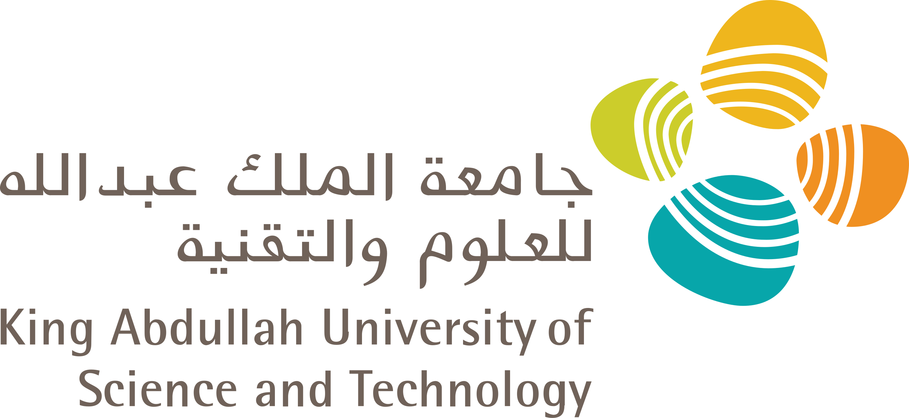
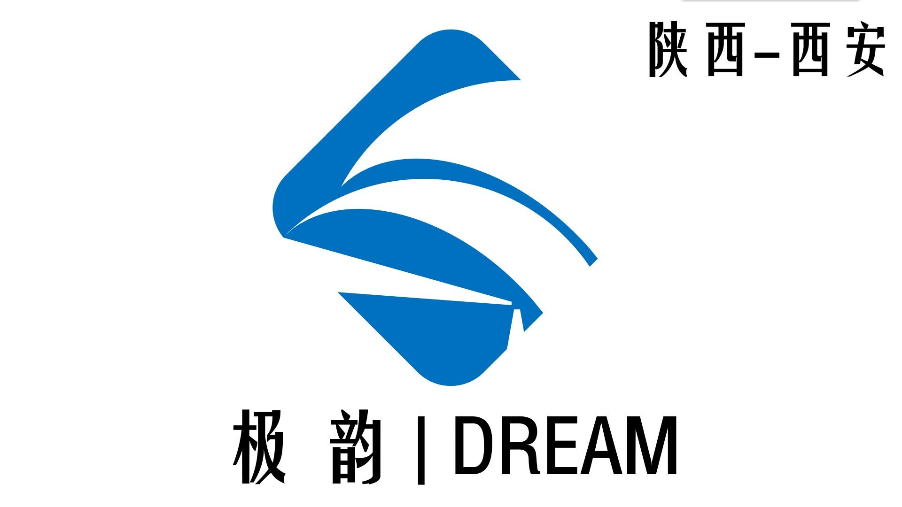

|
Hi! I’m Zhongyu Yang, a final year undergraduate student at Lanzhou University, majoring in Mathematics (the Basic Theory Class). Currently, I am working as a Remote Intern at KAUST Vision-CAIR. In my past research, I am most interested in 2D/3D AIGC & Multimodal understanding, generation, and interaction. In the short term, I hope to make a controllable and editable generative model to better understand multimodal input, not just text and visual prompts. My long-term research goal is to develop intelligent machines that can actively perceive, analyze, and interpret human states, behaviors, and potential motivations in dynamic scenes. Outside of research, I’m a big fan of the Los Angeles Lakers. My GOATs are Lionel Messi⚽ and LeBron James🏀 in their respective fields. Looking for a PhD position now. Feel free to reach out if you want to WeChat/Tel or collaborate with Email. |
|
2024.12: Started as a Remote Research Intern at KAUST, working on Retrieval-Augmented Generation (RAG) systems for vision knowledge. 2024.08: Released ReChar, a tool for creating stylized Chinese character artworks. 2024.05: Paper on Green Effect of Energy Transition Policy accepted at Finance Research Letters. 2024.04: Project on FPGA-Based AI Doctor funded by the national innovation program. 2024.04: Started as a Research Assistant at CUHKSZ, studying AI for Science and Computer Vision. 2024.03: Began Remote Research Internship at Heriot-Watt University, focusing on AIGC. 2024.01: Ranked 1st in the Central Universities Basic Research Fund (Barley Plan) for medical segmentation research. 2023.05: Paper on Environmental Quality in OECD Countries accepted at Renewable Energy. 2023.03: Ranked 1st in the national innovation and entrepreneurship project on Tropical Linear Representation of Involute Chinese Monoids. 2022.06: Paper on GDP Analysis of Gansu Province accepted at Chinese Market. |
|
2021.09 - 2025.06 (Expected): Undergraduate, School of Mathematics and Statistics, Lanzhou University, China. |
|  |
King Abdullah University of Science and Technology (KAUST) 12/24 – Present Remote Research Intern at Vision-CAIR Developing and optimizing web-scale Retrieval-Augmented Generation (RAG) systems tailored for understanding up-to-date vision knowledge. Advised by Jun Chen and Mohamed Elhoseiny. |

|
The Chinese University of Hong Kong, Shenzhen 04/24 – 11/24 Research Assistant in the Laboratory for Intelligent Autonomous Systems (LIAS) Research on Image Detection and Human Motion Generation Model, implement the latest research results into products, and complete conference and journal papers. Advised by Ruimao Zhang. |

|
Heriot-Watt University 03/24 – 09/24 Remote Research Intern Research on Multimodal Image Generation Models, Revitalizing Characters with Decoupled Content and Style Injection, and complete conference and journal papers. Advised by Yingfang Yuan. |
|  |
Xi’an Jiyun Technology Co., Ltd 01/24 – Present Co-founder ◦ Co-founded a technology company focused on innovative solutions. |
|
iFLYTEK Co., Ltd. 06/23 – 08/23 Data Analysis Assistant Leveraging historical user behavior data to construct precise user profiles and predictive models, analyzing to optimize marketing strategies and deliver personalized recommendations. |